番申运营
COURSE CURRICULUMAI NATIVE · 产品运营
番申产品运营课程详情
用 AI 把产品想法落地，亲自运营、验证与迭代。
在真实实践中，建立完整的产品运营思路。
01产品思维→02AI 落地→03传播运营→04反馈迭代→05求职表达
THE CURRICULUM

番申运营课程详情AI NATIVE · 产品运营
用 AI 把产品想法落地，亲自运营、验证与迭代。
在真实实践中，建立完整的产品运营思路。
THE CURRICULUM